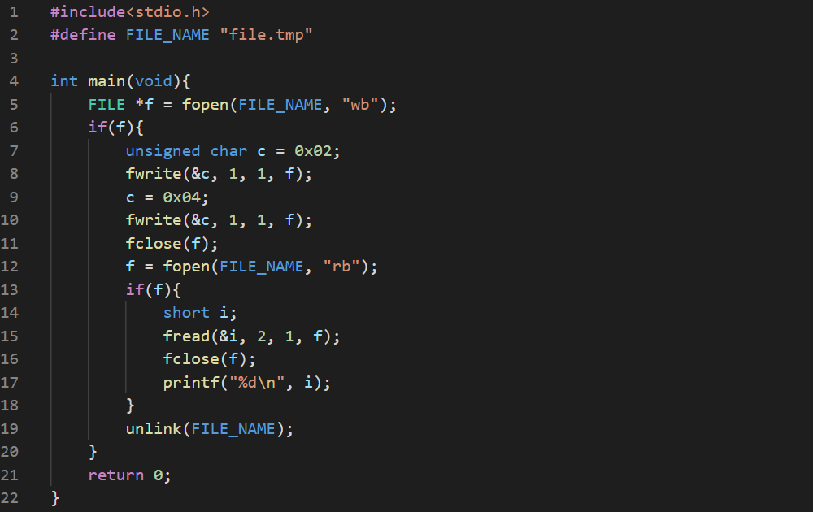

APISs (as in Application Programming Interface) is a set of standards adn protocols used to effectively and safely create new programs compatible with already existing programs. The term refers to the source code only, not at binary level.
Two famous APIs are:
1. POSIX:
It stands for Portable Operating System Interface for Unix. This is for unix-like systems. This is more than an API. Many of the "C" language standards are also covered.
2. Windows API:
A set of analogous conventions for Wndows environments. It's more complex than POSIX.
In fact, every programmer defines his/her own API when creating a new project.
ABIs (as in Application Binary Interface) is a set of standards, but for binary level. API doesn't tell about how it interacts with operating system's services, but ABI does and ABI is no way dependent on the API. API is portable but ABI is system dependent.
The current chapter deals with the lowest level of input/output in "C" language. This is where the code directly contacts with the operating system. In fact, all the functions for I/O operations are wrappers of corresponding OS services. These functions may not be compatible in other OSs. Most of the function we're going to discuss come from the unistd.h header file.
The file functions we use, for example fopen(), fread(), fwrite(), fcolse(), are quite high level. Many things happen in between these functions and the physical input/output.
- Data buffering occurs: When data is read or written, an intermediate layer is created called buffer loads chunks of memory instead of Loading full file. This causes two affects: read as soon as possible, write as late as possible. The latter action is called "readahead" and the former is called "write-behind". You can control some of it's properties using setvubf() and flush() but you can not turn it off.
- Line Translation occurs: fgets() performs a readahead to get a portion of data until an endlinef occurs and fputs() puts the data until the sector is full.
- Data translation occurs: fprintf() and fread() must convert data from internal representation to a human-readable form and back.
Let's create a program to create a temporary file, write two bytes, close and repen and read two bytes and then close again. Output the containing memory and remove the temporary file.

Now we'll rewrite the code using low level functions only (except sprintf).